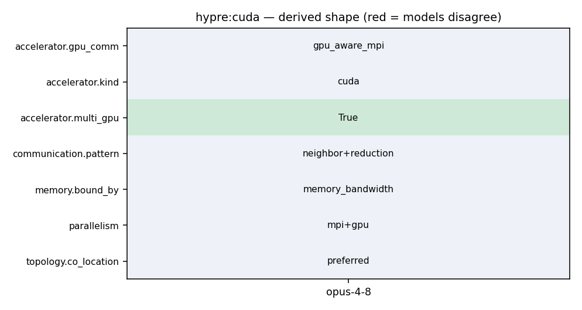

mpirun -np 4 ij -solver ... (one GPU per rank, cuSPARSE SpMV)
168 set_hypre_option(GPU HYPRE_ENABLE_CUDA "Use CUDA. Require cuda-10.0 or higher" OFF) 169 set_hypre_option(GPU HYPRE_ENABLE_HIP "Use HIP" OFF) 170 set_hypre_option(GPU HYPRE_ENABLE_SYCL "Use SYCL" OFF) 171 set_hypre_option(GPU HYPRE_ENABLE_GPU_AWARE_MPI "Use device aware MPI support" OFF) 172 set_hypre_option(GPU HYPRE_ENABLE_UNIFIED_MEMORY "Use unified memory for allocating the memory" OFF) 173 set_hypre_option(GPU HYPRE_ENABLE_DEVICE_MALLOC_ASYNC "Use device async malloc" OFF) 174 set_hypre_option(GPU HYPRE_ENABLE_THRUST_NOSYNC "Use Thrust par_nosync policy" OFF)
165 set_hypre_option(BASE HYPRE_BUILD_TESTS "Build tests" OFF) 166 167 # GPU common options 168 set_hypre_option(GPU HYPRE_ENABLE_CUDA "Use CUDA. Require cuda-10.0 or higher" OFF) 169 set_hypre_option(GPU HYPRE_ENABLE_HIP "Use HIP" OFF) 170 set_hypre_option(GPU HYPRE_ENABLE_SYCL "Use SYCL" OFF) 171 set_hypre_option(GPU HYPRE_ENABLE_GPU_AWARE_MPI "Use device aware MPI support" OFF)
31 { 32 hypre_GpuProfilingPushRange("Matvec"); 33 34 MPI_Comm comm = hypre_ParCSRMatrixComm(A); 35 hypre_ParCSRCommPkg *comm_pkg = hypre_ParCSRMatrixCommPkg(A); 36 hypre_ParCSRCommHandle *comm_handle; 37 HYPRE_Int *d_send_map_elmts; 38 HYPRE_Int send_map_num_elmts; 39
31 { 32 hypre_GpuProfilingPushRange("Matvec"); 33 34 MPI_Comm comm = hypre_ParCSRMatrixComm(A); 35 hypre_ParCSRCommPkg *comm_pkg = hypre_ParCSRMatrixCommPkg(A); 36 hypre_ParCSRCommHandle *comm_handle; 37 HYPRE_Int *d_send_map_elmts; 38 HYPRE_Int send_map_num_elmts; 39
125 126 local_result = hypre_StructInnerProdLocal(x, y); 127 128 hypre_MPI_Allreduce(&local_result, &global_result, 1, HYPRE_MPI_REAL, hypre_MPI_SUM, 129 hypre_StructVectorComm(x)); 130 131 hypre_IncFLOPCount(2 * hypre_StructVectorGlobalSize(x));
15 #include "_hypre_parcsr_mv.h" 16 #include "_hypre_utilities.hpp" 17 18 #if defined(HYPRE_USING_GPU) 19 20 /*-------------------------------------------------------------------------- 21 * hypre_ParCSRMatrixMatvecOutOfPlaceDevice
15 #include "_hypre_parcsr_mv.h" 16 #include "_hypre_utilities.hpp" 17 18 #if defined(HYPRE_USING_GPU) 19 20 /*-------------------------------------------------------------------------- 21 * hypre_ParCSRMatrixMatvecOutOfPlaceDevice 22 *--------------------------------------------------------------------------*/ 23 24 HYPRE_Int 25 hypre_ParCSRMatrixMatvecOutOfPlaceDevice( HYPRE_Complex alpha, 26 hypre_ParCSRMatrix *A, 27 hypre_ParVector *x, 28 HYPRE_Complex beta, 29 hypre_ParVector *b, 30 hypre_ParVector *y ) 31 { 32 hypre_GpuProfilingPushRange("Matvec"); 33 34 MPI_Comm comm = hypre_ParCSRMatrixComm(A); 35 hypre_ParCSRCommPkg *comm_pkg = hypre_ParCSRMatrixCommPkg(A); 36 hypre_ParCSRCommHandle *comm_handle; 37 HYPRE_Int *d_send_map_elmts; 38 HYPRE_Int send_map_num_elmts;
165 set_hypre_option(BASE HYPRE_BUILD_TESTS "Build tests" OFF) 166 167 # GPU common options 168 set_hypre_option(GPU HYPRE_ENABLE_CUDA "Use CUDA. Require cuda-10.0 or higher" OFF) 169 set_hypre_option(GPU HYPRE_ENABLE_HIP "Use HIP" OFF) 170 set_hypre_option(GPU HYPRE_ENABLE_SYCL "Use SYCL" OFF) 171 set_hypre_option(GPU HYPRE_ENABLE_GPU_AWARE_MPI "Use device aware MPI support" OFF)
168 set_hypre_option(GPU HYPRE_ENABLE_CUDA "Use CUDA. Require cuda-10.0 or higher" OFF) 169 set_hypre_option(GPU HYPRE_ENABLE_HIP "Use HIP" OFF) 170 set_hypre_option(GPU HYPRE_ENABLE_SYCL "Use SYCL" OFF) 171 set_hypre_option(GPU HYPRE_ENABLE_GPU_AWARE_MPI "Use device aware MPI support" OFF) 172 set_hypre_option(GPU HYPRE_ENABLE_UNIFIED_MEMORY "Use unified memory for allocating the memory" OFF) 173 set_hypre_option(GPU HYPRE_ENABLE_DEVICE_MALLOC_ASYNC "Use device async malloc" OFF) 174 set_hypre_option(GPU HYPRE_ENABLE_THRUST_NOSYNC "Use Thrust par_nosync policy" OFF)